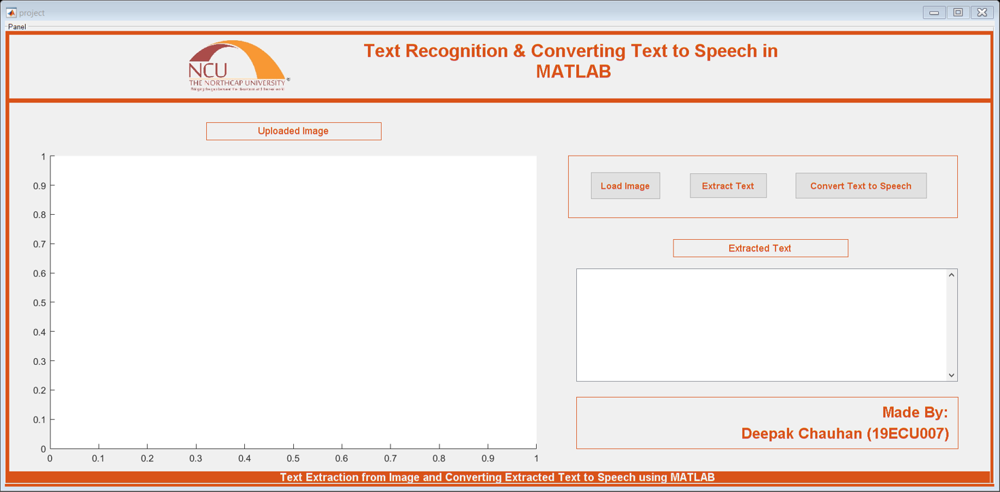

Contents
- Read Image
- Show image
- Convert to gray scale
- Convert to binary image
- Remove all object containing fewer than 30 pixels
- Label connected components
- Objects extraction
- Convert Text to Speech
- Read Image
- Convert to gray scale
- Convert to binary image
- Remove all object containing fewer than 30 pixels
- Label connected components
- Objects extraction
- Convert Text to Speech
function varargout = project(varargin) % PROJECT MATLAB code for project.fig % PROJECT, by itself, creates a new PROJECT or raises the existing % singleton*. % % H = PROJECT returns the handle to a new PROJECT or the handle to % the existing singleton*. % % PROJECT('CALLBACK',hObject,eventData,handles,...) calls the local % function named CALLBACK in PROJECT.M with the given input arguments. % % PROJECT('Property','Value',...) creates a new PROJECT or raises the % existing singleton*. Starting from the left, property value pairs are % applied to the GUI before project_OpeningFcn gets called. An % unrecognized property name or invalid value makes property application % stop. All inputs are passed to project_OpeningFcn via varargin. % % *See GUI Options on GUIDE's Tools menu. Choose "GUI allows only one % instance to run (singleton)". % % See also: GUIDE, GUIDATA, GUIHANDLES % Edit the above text to modify the response to help project % Last Modified by GUIDE v2.5 20-Nov-2021 23:08:17 % Begin initialization code - DO NOT EDIT gui_Singleton = 1; gui_State = struct('gui_Name', mfilename, ... 'gui_Singleton', gui_Singleton, ... 'gui_OpeningFcn', @project_OpeningFcn, ... 'gui_OutputFcn', @project_OutputFcn, ... 'gui_LayoutFcn', [] , ... 'gui_Callback', []); if nargin && ischar(varargin{1}) gui_State.gui_Callback = str2func(varargin{1}); end if nargout [varargout{1:nargout}] = gui_mainfcn(gui_State, varargin{:}); else gui_mainfcn(gui_State, varargin{:}); end % End initialization code - DO NOT EDIT % --- Executes just before project is made visible. function project_OpeningFcn(hObject, eventdata, handles, varargin) % This function has no output args, see OutputFcn. % hObject handle to figure % eventdata reserved - to be defined in a future version of MATLAB % handles structure with handles and user data (see GUIDATA) % varargin command line arguments to project (see VARARGIN) % Choose default command line output for project handles.output = hObject; % Update handles structure guidata(hObject, handles); screen=imread('ncu.jpg'); axes(handles.axes4); imshow(screen); % UIWAIT makes project wait for user response (see UIRESUME) % uiwait(handles.figure1); % --- Outputs from this function are returned to the command line. function varargout = project_OutputFcn(hObject, eventdata, handles) % varargout cell array for returning output args (see VARARGOUT); % hObject handle to figure % eventdata reserved - to be defined in a future version of MATLAB % handles structure with handles and user data (see GUIDATA) % Get default command line output from handles structure varargout{1} = handles.output; % --- Executes on button press in pushbutton1. function pushbutton1_Callback(hObject, eventdata, handles) % hObject handle to pushbutton1 (see GCBO) % eventdata reserved - to be defined in a future version of MATLAB % handles structure with handles and user data (see GUIDATA) [filename, pathname] = ... uigetfile({'*.png';'*.jpg';'*.jpeg';'*.*'},'Select Image File'); I=strcat(pathname,filename); % figure(1); %imshow(I); axes(handles.axes1); imshow(I); set(handles.pushbutton2,'Enable','on') helpdlg('Image has been Loaded Successfully. Now you can extract text from Image ',... 'Load Image'); % --- Executes on button press in pushbutton2. function pushbutton2_Callback(hObject, eventdata, handles)
% hObject handle to pushbutton2 (see GCBO) % eventdata reserved - to be defined in a future version of MATLAB % handles structure with handles and user data (see GUIDATA)
Read Image
Inputimage=getimage;
Show image
figure(1) imshow(Inputimage); title('INPUT IMAGE WITH NOISE');
Convert to gray scale
if size(Inputimage,3)==3 % RGB image Inputimage=rgb2gray(Inputimage); end
Convert to binary image
threshold = graythresh(Inputimage); Inputimage =~imbinarize(Inputimage,threshold);
Remove all object containing fewer than 30 pixels
Inputimage = bwareaopen(Inputimage,30); pause(1);
Label connected components
[L Ne]=bwlabel(Inputimage); propied=regionprops(L,'BoundingBox'); %imshow(~Inputimage); hold on for n=1:size(propied,1) rectangle('Position',propied(n).BoundingBox,'EdgeColor','g','LineWidth',2) end hold off pause (1);
Objects extraction
m=ocr(Inputimage);
disp(m.Text);
edit1text = m.Text;
set(handles.edit1,'string',edit1text);
Convert Text to Speech
caUserInput = m.Text; caUserInput = char(caUserInput); % Convert from cell to string. NET.addAssembly('System.Speech'); obj = System.Speech.Synthesis.SpeechSynthesizer; obj.Volume = 100; Speak(obj, caUserInput);
function edit1_Callback(hObject, eventdata, handles) % hObject handle to edit1 (see GCBO) % eventdata reserved - to be defined in a future version of MATLAB % handles structure with handles and user data (see GUIDATA) % Hints: get(hObject,'String') returns contents of edit1 as text % str2double(get(hObject,'String')) returns contents of edit1 as a double % --- Executes during object creation, after setting all properties. function edit1_CreateFcn(hObject, eventdata, handles) % hObject handle to edit1 (see GCBO) % eventdata reserved - to be defined in a future version of MATLAB % handles empty - handles not created until after all CreateFcns called % Hint: edit controls usually have a white background on Windows. % See ISPC and COMPUTER. if ispc && isequal(get(hObject,'BackgroundColor'), get(0,'defaultUicontrolBackgroundColor')) set(hObject,'BackgroundColor','white'); end % --- Executes on button press in pushbutton3. function pushbutton3_Callback(hObject, eventdata, handles) % hObject handle to pushbutton3 (see GCBO) % eventdata reserved - to be defined in a future version of MATLAB % handles structure with handles and user data (see GUIDATA) function edit2_Callback(hObject, eventdata, handles) % hObject handle to edit2 (see GCBO) % eventdata reserved - to be defined in a future version of MATLAB % handles structure with handles and user data (see GUIDATA) % Hints: get(hObject,'String') returns contents of edit2 as text % str2double(get(hObject,'String')) returns contents of edit2 as a double % --- Executes during object creation, after setting all properties. function edit2_CreateFcn(hObject, eventdata, handles) % hObject handle to edit2 (see GCBO) % eventdata reserved - to be defined in a future version of MATLAB % handles empty - handles not created until after all CreateFcns called % Hint: edit controls usually have a white background on Windows. % See ISPC and COMPUTER. if ispc && isequal(get(hObject,'BackgroundColor'), get(0,'defaultUicontrolBackgroundColor')) set(hObject,'BackgroundColor','white'); end % --- Executes on button press in pushbutton4. function pushbutton4_Callback(hObject, eventdata, handles)
% hObject handle to pushbutton4 (see GCBO) % eventdata reserved - to be defined in a future version of MATLAB % handles structure with handles and user data (see GUIDATA)
Read Image
Inputimage=getimage;
Convert to gray scale
if size(Inputimage,3)==3 % RGB image Inputimage=rgb2gray(Inputimage); end
Convert to binary image
threshold = graythresh(Inputimage); Inputimage =~imbinarize(Inputimage,threshold);
Remove all object containing fewer than 30 pixels
Inputimage = bwareaopen(Inputimage,30); pause(1);
Label connected components
[L Ne]=bwlabel(Inputimage); propied=regionprops(L,'BoundingBox'); %imshow(~Inputimage); hold on for n=1:size(propied,1) rectangle('Position',propied(n).BoundingBox,'EdgeColor','g','LineWidth',2) end hold off pause (1);
Objects extraction
m=ocr(Inputimage); disp(m.Text);
Convert Text to Speech
caUserInput = m.Text; caUserInput = char(caUserInput); % Convert from cell to string. NET.addAssembly('System.Speech'); obj = System.Speech.Synthesis.SpeechSynthesizer; obj.Volume = 100; Speak(obj, caUserInput); % --- Executes during object creation, after setting all properties.
function axes4_CreateFcn(hObject, eventdata, handles) % hObject handle to axes4 (see GCBO) % eventdata reserved - to be defined in a future version of MATLAB % handles empty - handles not created until after all CreateFcns called % Hint: place code in OpeningFcn to populate axes4